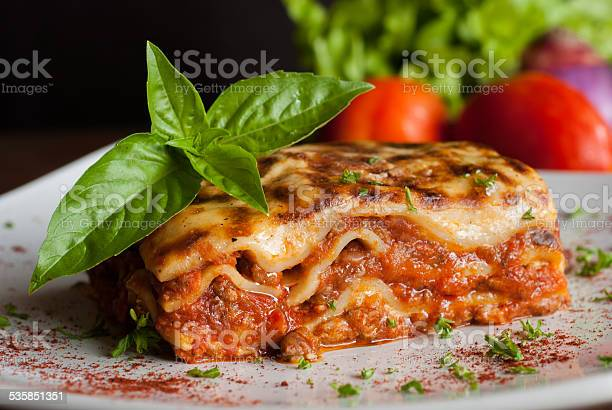

Lasagna

Description
This is a homemade lasagna with 6 layers of meat, cheese and pasta. High calorie and not healthy! Enjoy
Pairs well with some wine, but what doesn't?
Ingredients that will be required for this:
- Lasagna Pasta
- Cheese
- Ground Beef
- More Cheese
- More Ground Beef
- Cute basil leaf for garnish
- Bottle of wine
- Cooking mood
Steps to creating the perfect lasagna, all steps are important!
- Preheat oven to 400 F
- Take a nice gulp of your wine (preferably red)
- Start by putting the first layer of pasta on the pyrex dish
- Add cheese to cover the whole thing
- Add beef in the same manner
- Another pasta sheet followed by another layer of cheese and beef
- Do X (this means as many as you want) times until your tower of lasagna is complete
- Place sheet into oven, if it still fits, and cook for 45 minutes
- Open another bottle of Red and take the lasagna out, Careful of burning yourself!!
Enjoy your feast!